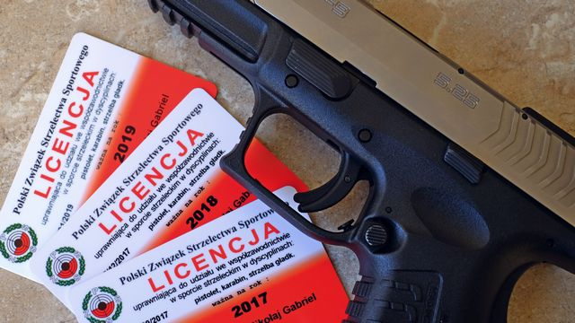

Od zera do rewolwera
O broni palnej, pozwoleniach i strzelectwie, po ludzku i bez zadęcia
Krok 6: licencja zawodnicza
15 sierpnia 2019, Mikołaj Bartnicki

Chorwacki pistolet XDM 9×19
Od teraz oficjalnie będziesz strzelcem sportowym. Uzyskanie pierwszej licencji zawodniczej jest bardzo łatwe. Późniejsze jej utrzymanie, choć wymaga pewnego minimum uwagi, również nie stanowi trudności. Witaj zatem w gronie zawodników PZSS!
Po co mi licencja?
Licencja zawodnicza to dokument, który uprawnia cię do startowania w oficjalnych zawodach strzeleckich organizowanych przez kluby zrzeszone w PZSS. Tak to sobie PZSS wymyślił, że nie wystarczy dobrze strzelać aby wziąć udział w rywalizacji sportowej, trzeba jeszcze obowiązkowo opłacić prawo do tego udziału. Opłacić, bo - o czym więcej za chwilę - licencja nie jest za darmo. PZSS musi się z czegoś utrzymać, a wpływy z tytułu wydawania licencji stanowią znaczną część budżetu tej organizacji. Tacy to sprytni przedsiębiorcy.
Licencja, licencja sportowa, licencja zawodnicza - wszystko to są różne określenia tego samego dokumentu.
Ważniejsze jest jednak to, że posiadanie licencji jest warunkiem koniecznym uzyskania pozwolenia na broń do celów sportowych. Oczywiście, jest to kolejny zupełnie bezsensowny warunek, bo z faktu legitymowania się licencją nie wynika absolutnie nic co mogłoby wskazywać, że nadajesz się na posiadacza broni palnej bardziej niż ktoś, kto takowej licencji nie ma. Niestety, Ustawa o broni i amunicji uznaje wyłącznie uprawianie strzelectwa sportowego w ramach struktur PZSS, więc chcąc zdobyć pozwolenie sportowe, musisz mieć tę cholerną licencję, niezależnie od tego co na ten temat sądzisz.
Zakres licencji
Podobnie jak licencja klubowa oraz patent strzelecki, licencja zawodnicza też obejmuje co najmniej jedną z trzech dyscyplin sportu strzeleckiego: pistolet, karabin oraz strzelbę gładkolufową. Aby twoja licencja uwzględniała daną dyscyplinę strzelectwa, dyscyplinę tę musi zawierać także twój patent strzelecki. Jeśli na przykład masz patent na pistolet i karabin, ale nie na strzelbę, to i w twojej licencji zabraknie strzelby. A jak już wiesz z z poprzednich wpisów na moim blogu, to samo ograniczenie będzie dotyczyło twojego pozwolenia na broń sportową. Dlatego tak ważne jest aby mieć patent i licencję w pełnym zakresie wszystkich strzeleckich dyscyplin.
Jak zdobyć licencję?
Licencję zawodniczą może uzyskać każdy, kto należy do klubu sportowego zrzeszonego w PZSS, oraz posiada patent strzelecki. Spełniasz oba te warunki, więc swoją pierwszą licencję masz już w kieszeni.
Aby otrzymać licencję, pobierz ze swojego profilu na portalu PZSS szablon podania o jej wydanie. Wypełnij go i złóż w sekretariacie swojego klubu, jednocześnie wnosząc opłatę wysokości około 70 złotych (dokładna kwota zależy od województwa). Gdy już złożysz papiery i opłacisz myto, to za pośrednictwem portalu PZSS zgłoś chęć uzyskania licencji. Pamiętaj, żeby uzupełnić swój profil na portalu o aktualne zdjęcie portretowe. Z twojej strony to wszystko.
W niektórych klubach, opłata za licencję jest uwzględniona w składce rocznej, więc nie trzeba wnosić jej osobno. Niezbyt to uczciwe wobec tych, którzy należą do klubu ale nie mają licencji (choć pewnie stanowią margines).
Gdy PZSS otrzyma zgłoszenie, to dogada się z twoim klubem w kwestii sprawdzenia wniesionej opłaty, przemieli wszystkie niezbędne informacje i wyda ci twoją pierwszą licencję. Plik PDF do pobrania pojawi się na twoim profilu w portalu PZSS, natomiast plastikowa karta zostanie wysłana pocztą do twojego klubu, gdzie będziesz mógł ją odebrać. Całość nie powinna potrwać dłużej niż miesiąc.
Utrzymanie licencji - obowiązkowe starty w zawodach
Wszystko to byłoby bardzo proste i mógłbym na tym zakończyć artykuł, gdyby nie to, że licencja zawodnicza ma ograniczony termin ważności. Niestety, jest ona ważna tylko do końca roku, w którym ją dostałeś. Po tym czasie, musisz przedłużyć jej ważność, czyli w praktyce wyrobić nową licencję na następny rok.
Sam proces przedłużenia ważności przebiega podobnie jak wyrabianie pierwszej licencji. Różnicą jest inny szablon podania - zamiast podania o wydanie, składasz podanie o przedłużenie licencji. Poza tym wszystko odbywa się tak samo: zanosisz papier do klubu, płacisz tyle co przy wyrabianiu pierwszej licencji, po czym przez portal PZSS zgłaszasz chęć przedłużenia licencji. W ciągu miesiąca masz na swoim profilu plik PDF do pobrania, zaś plastikowa karta czeka na ciebie w sekretariacie klubu.
Na tym kończą się podobieństwa i dalej sprawa nieco się komplikuje. O ile pierwszą licencję dostajesz za samą chęć jej posiadania, to przedłużenie jej na następne lata jest już obarczone pewnym warunkiem.
Wracamy do wspomnianego w poprzednich artykułach obowiązku uczestniczenia w zawodach! Aby nabyć prawo do przedłużenia swojej licencji zawodniczej na kolejny rok, musisz wykonać pewne minimum startów w sportowych zawodach strzeleckich. Nie jest to dowolne minimum, ani nie są to dowolne zawody. Oto szczegóły:
Zawody oficjalne i podwórkowe
Przede wszystkim, zawody w których startujesz aby przedłużyć swoją licencję, muszą być oficjalnie zgłoszone do PZSS. Zawody organizowane przez kluby sportowe to prawie zawsze są zawody oficjalne; ale jeśli w ogłoszeniu o zawodach nie ma takiej informacji lub masz jakiekolwiek wątpliwości, to nie bój się dopytać czy zawody liczą się do przedłużenia licencji. Na szczęście, w większości przypadków tak właśnie będzie.
Wszelkie nieoficjalne zawody o torbę czereśni, niezgłoszone do PZSS, nie liczą się. Z perspektywy przedłużenia ważności licencji, start w takich zawodach nic nie daje.
4-2-2, czyli liczba startów
Drugi warunek dotyczy samej liczby startów. Aby uzyskać prawo przedłużenia licencji w pełnym zakresie dyscyplin na kolejny rok, w roku bieżącym musisz wystartować w zawodach osiem razy. Cztery razy w jednej wybranej przez siebie dyscyplinie, zaś w pozostałych - po dwa razy. Możesz więc wystartować na przykład czterokrotnie w konkurencjach pistoletowych, dwa razy w konkurencjach karabinowych i dwa razy w konkurencjach strzelbowych. Albo w dowolnej innej kombinacji jaka będzie dla ciebie wygodna, o ile tylko wypełnia ona schemat: 4-2-2.
Jeśli masz niepełną licencję, na przykład bez strzelby, to liczba wymaganych startów jest mniejsza: cztery starty w jednej wybranej dyscyplinie i dwa w pozostałej. Na przykład cztery starty w konkurencjach karabinowych, a dwa w konkurencjach pistoletowych. Lub odwrotnie. Analogicznie, gdy masz licencję tylko na jedną dyscyplinę, to musisz wykonać cztery starty w tej dyscyplinie i to wszystko. Ale zdecydowanie lepiej jest mieć licencję w pełnym zakresie.
Aż osiem startów? Miało być łatwo!
Spokojnie, jest łatwo, wyrobienie ośmiu startów to żaden problem. W ramach jednych zawodów zwykle zaliczasz kilka startów w różnych konkurencjach danej dyscypliny. Pozwól, że posłużę się przykładem zawodów z cyklu Puchar Prezesa organizowanych przez mój macierzysty klub, czyli wrocławski WKS Śląsk.
W czasie jednej rundy zawodów w rzeczonym klubie, w ramach dyscypliny pistolet, możesz odbyć starty w czterech konkurencjach: pistolet sportowy, pistolet centralnego zapłonu, pistolet standardowy, pistolet pneumatyczny. Za jedną wizytą masz już zatem komplet startów w pistolecie! W czasie tej samej wizyty wystartujesz też w dwóch konkurencjach karabinowych: karabin sportowy oraz karabin pneumatyczny. Trach - zaliczasz też karabin! Na deser strzelasz sobie ze strzelby konkurencje trap oraz skeet, tym samym zaliczając dwa starty w dyscyplinie strzelba gładkolufowa. Schemat 4-2-2 wypełniony! Jak widzisz, minimum startów do przedłużenia licencji możesz wyrobić w czasie jednej wizyty na strzelnicy!
Starty w konkurencjach pneumatycznych liczą się do przedłużenia licencji tak samo jak starty w konkurencjach strzelanych z broni palnej. Dziwne? Raczej fajne!
Niestety nie każdy klub organizuje zawody z tak szerokim wachlarzem konkurencji. Zwykle będziesz musiał wybrać się na zawody dwa lub trzy razy w roku.
Ale hej - zawody to rekreacja, a nie żaden przykry obowiązek! Większość amatorskich zawodów ma charakter bardziej towarzyski niż wyczynowo-sportowy. Spotykasz kolegów z którymi robiłeś pozwolenie i z którymi trenujesz. Podziwiacie swoje sukcesy, wyśmiewacie swoje porażki, narzekacie na swoje kluby i przechwalacie się posiadaną bronią. Naprawdę nie ma się czym stresować.
Powiem więcej: może dzisiaj się tego nie spodziewasz, ale całkiem prawdopodobne, że strzelectwo spodoba ci się i zaangażujesz się w ten sport. Tak było w moim przypadku: starałem się o pozwolenie aby kupić sobie wymarzony rewolwer, a w efekcie regularnie biorę udział w zawodach strzeleckich, odbywając około setki startów rocznie.
Egzamin ratunkowy
Jeśli z jakiegokolwiek powodu nie zdołałeś wyrobić wymaganego minimum startów, to jeszcze nic straconego. PZSS przewiduje możliwość przedłużenia licencji egzaminem sprawdzającym.
Taki egzamin wygląda tak jak praktyczna część egzaminu na patent strzelecki. Jest organizowany przez twój klub sportowy i kosztuje do 400 złotych za pierwszą dyscyplinę, w której zabrakło ci startów w danym roku, zaś do 200 złotych za każdą następną. Są to stawki maksymalne, w najgorszym razie zapłacisz więc 800 złotych.
Nieliczni korzystają z tej opcji, niemniej jednak warto pamiętać, że w sytuacji awaryjnej zawsze masz możliwość ratowania się takim egzaminem.
Czy ktoś to w ogóle sprawdza?
Najprawdopodobniej nie. Twój wniosek o przedłużenie licencji ma charakter wyłącznie deklaratywny, bo nie zawiera żadnych dowodów na odbyte przez ciebie starty. PZSS, zanim wyda decyzję o przedłużeniu licencji, weryfikuje zgłoszone informacje w twoim klubie. Natomiast klub, po otrzymaniu papierowego podania, powinien sprawdzić prawdziwość twojej deklaracji, zanim da zielone światło dla PZSS.
Czy klub faktycznie to robi? Trudno powiedzieć. Ciężko jednak uwierzyć w to, że starty każdego z członków klubu są skrupulatnie liczone. Jeśli mają miejsce jakieś kontrole, to zapewne wyrywkowe, dla losowo wybranych podań.
Tak czy inaczej, zdecydowanie odradzam wszelkie próby cwaniakowania. W przypadku wykrycia oszustwa, PZSS może dyscyplinarnie cofnąć licencję i odmówić wydania nowej. Jeśli pominąłeś obowiązkowe starty, to skorzystaj z egzaminu, po to on jest.
Nowy rok w listopadzie
Być może zwróciłeś uwagę na możliwość zaistnienia pewnej niedogodności. Otóż co w sytuacji, gdy pierwszą licencję dostaniesz pod koniec roku na przykład w wigilię Bożego Narodzenia? Jak wtedy zdążyć z wyrobieniem obowiązkowych startów? Czy od razu trzeba szykować portfel na egzamin przedłużający licencję? Na szczęście nie!
Jeśli swoją pierwszą licencję zawodniczą uzyskałeś w listopadzie lub w grudniu, to jej ważność automatycznie jest przedłużona na cały rok następny. Dzięki temu nie musisz na gwałt szukać zawodów ani nie jesteś zmuszony płacić za egzamin. Pamiętaj tylko, że reguła ta działa wyłącznie dla pierwszej licencji, oraz tylko wówczas gdy wydano ją w listopadzie lub grudniu. Jeśli zatem dostałeś swoją pierwszą licencję 31 października, to masz tylko dwa miesiące na odbycie wymaganego minimum startów.
Wobec powyższego, czasem warto wstrzymać się z podaniem o pierwszą licencję. Lepiej dostać ją nieco później, żeby trafić w okres listopad - grudzień, tym samym zapewniając sobie darmowe przedłużenie ważności licencji o cały następny rok.
Co jeśli nie przedłużę licencji?
podstawa prawna:
UoBiA art. 18 ust. 4
UoBiA art. 27 ust. 5
Nie masz żadnego prawnego obowiązku przedłużania posiadanej licencji. Jednakże konsekwencje takiego zaniedbania mogą być bardzo przykre. To, że stracisz prawo startowania w zawodach to naprawdę pół biedy. Przede wszystkim możesz stracić pozwolenie na broń!
Zgodnie z Ustawą o broni i amunicji, posiadanie licencji zawodniczej jest ważną przyczyną wydania pozwolenia na broń do celów sportowych. Jednocześnie ustawa ta przewiduje możliwość cofnięcia pozwolenia, jeśli ustała ważna przyczyna jego wydania. Oznacza to, że Policja może cofnąć twoje pozwolenie sportowe, jeśli nie przedłużysz swojej licencji. Nie uciekniesz przed tym, bo Policja może łatwo sprawdzić w PZSS czy masz aktualną licencję czy nie. Jeśli stracisz licencję, to Policja ma cię na widelcu i twoje pozwolenie sportowe jest zagrożone!
Kolekcja, głupcze!
Tutaj warto przypomnieć, jak ważne jest posiadanie także pozwolenia kolekcjonerskiego. Życie czasami serwuje różne przykre niespodzianki. Może się zdarzyć, że z powodów zdrowotnych lub rodzinnych, nie będziesz mógł wykonać wymaganego minimum startów w zawodach ani skorzystać z egzaminu ratunkowego. Stracisz licencję, w konsekwencji czego możesz stracić także pozwolenie sportowe.
W takiej sytuacji, pozwolenie kolekcjonerskie ratuje twoją broń przed pospieszną sprzedażą lub przed zamknięciem w policyjnym depozycie. Wystarczy przerejestrować broń z pozwolenia sportowego na kolekcjonerskie i problem z głowy. Utrzymanie pozwolenia kolekcjonerskiego jest znacznie łatwiejsze, bo sprowadza się do corocznego opłacania symbolicznej składki stowarzyszenia, do którego należysz.
PS
Niniejszy artykuł jest częścią kompletnego poradnika, składającego się z następujących rozdziałów: